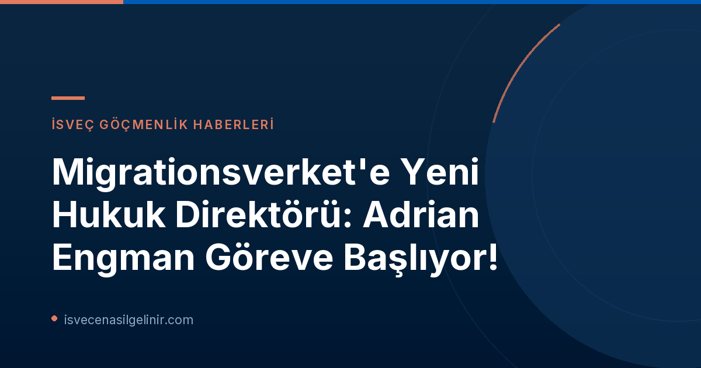

Adrian Engman Kimdir? Kapsamlı Bir Profil
Migrationsverket'in yeni Hukuk Direktörü Adrian Engman, İsveç hukuk camiasında saygın bir kariyere sahip. Halen Nyköping Bölge Mahkemesi'nde (Nyköpings tingsrätt) baş hakim olarak görev yapan Engman, hem yargıçlık hem de avukatlık alanında geniş bir deneyim birikimine sahip.
Adrian Engman'ın Önemli Görevleri ve Deneyimleri
- Mevcut Görev: Nyköping Bölge Mahkemesi Baş Hakimi (Chefsrådman)
- Önceki Görevler:
- Ayrımcılık Ombudsmanı'nda Hukuk Birimi Başkanı (Diskrimineringsombudsmannen)
- İsveç Hükümet Ofisleri'nde (Regeringskansliet) uzun yıllar çalışma
- Dışişleri Bakanlığı'nda (Utrikesdepartementet) hükümet temsilcisi olarak AB Adalet Divanı ve Avrupa İnsan Hakları Mahkemesi'nde göçmenlik konularında çalışmalar
- Adalet Bakanlığı (Justitiedepartementet) tarafından Brüksel'e gönderilerek yeni AB direktifleri ve düzenlemeleri üzerinde müzakereler yürütme (göçmenlik konularında genel sorumluluk dahil)
Bu zengin geçmişi, Engman'ın Migrationsverket'teki yeni görevinde kurumun karmaşık hukuki süreçlerini yönetme ve geliştirme konusunda eşsiz bir yetkinlik sunacağını gösteriyor. Özellikle AB hukuku ve uluslararası göçmenlik hukuku alanındaki deneyimi, kurumun uluslararası standartlara uygun ve hukuken sağlam kararlar almasına yardımcı olacaktır.
Migrationsverket'teki Yeni Görevin Önemi ve Sorumlulukları
Migrationsverket Genel Direktörü Maria Mindhammar, Adrian Engman'ı kurumda görmekten duyduğu memnuniyeti dile getirerek, bu rolün Migrationsverket için merkezi bir öneme sahip olduğunu vurguladı. Mindhammar'ın ifadesiyle, Engman'ın "derin hukuki yetkinliği" ve "ağırlığı", kurumun hukuki kalitesinin ve hukuki çalışmalarının devam eden gelişiminin anahtarı olacaktır.
Adrian Engman da yeni göreviyle ilgili olarak yaptığı açıklamada, Migrationsverket'in "önemli bir toplumsal görevi" olduğunu belirtti. Kurumun her gün bireylerin yaşamlarını değiştiren kararlar aldığını ve "hızlı siyasi değişim içinde" faaliyet gösterdiğini vurgulayan Engman, hukuki güvenliğin ve etkinliğin merkezi önemine dikkat çekti. Bu açıklamalar, yeni Hukuk Direktörü'nün, göçmenlik süreçlerinin sadece yasalara uygunluğunu değil, aynı zamanda adil ve hızlı bir şekilde yürütülmesini de öncelikleri arasına alacağını gösteriyor.
İsveç Göçmenlik Süreçlerinde Hukuki Güvence
İsveç, göçmenlik politikaları konusunda sürekli olarak güncellenen yasalara ve düzenlemelere sahip bir ülkedir. Bu dinamik ortamda, Migrationsverket gibi kilit bir kurumun Hukuk Direktörü pozisyonu, alınan kararların hukuki sağlamlığını ve bireylerin haklarının korunmasını doğrudan etkiler. Adrian Engman'ın bu göreve atanması, kurumun hukuki çerçevesini güçlendirme ve tüm süreçlerde şeffaflık ile adaleti sağlama konusundaki kararlılığını pekiştiriyor.
İsveç'te vatandaşlık veya oturum izni başvurusu gibi süreçlerde, başvuru sahipleri için hukuki güvence hayati önem taşır. Bu bağlamda, güncel yasalara hakim ve uluslararası hukuk deneyimine sahip bir Hukuk Direktörü'nün liderliği, süreçlerin daha öngörülebilir ve güvenilir olmasını sağlayacaktır. İsveç vatandaşlık sürecine hazırlananlar için, sverigemedborgarskapsprov.com adresi üzerinden İsveç Vatandaşlık Testi hakkında detaylı bilgi ve kaynaklara ulaşabilirler.
Atama Takvimi ve Gelecek Beklentileri
| Bilgi | Detay |
|---|---|
| Yeni Hukuk Direktörü | Adrian Engman |
| Göreve Başlama Tarihi | 1 Şubat 2027 |
| Duyuru Kurumu | Migrationsverket |
Adrian Engman, 1 Şubat 2027 tarihinde resmi olarak görevine başlayacak. Bu atama ile Migrationsverket'in önümüzdeki dönemde hukuki danışmanlık, politika geliştirme ve karar alma süreçlerinde daha güçlü bir yaklaşıma sahip olması bekleniyor. Engman'ın liderliğinde, kurumun hukuki altyapısının daha da güçlenerek, hem İsveçli vatandaşlar hem de ülkeye göç eden bireyler için daha adil ve etkin bir sistem sunması hedefleniyor.
Referanslar:
- Migrationsverket Resmi Duyurusu: Migrationsverket får ny rättschef
- İsveç Vatandaşlık Testi Bilgileri: sverigemedborgarskapsprov.com
İsveç Göçmenlik ve Vatandaşlık Süreçleri Hakkında Daha Fazla Bilgi Edinin
İsveç'e göç etme, oturum izni veya vatandaşlık başvuruları hakkında güncel bilgilere ve detaylı rehberlere ulaşmak için sitemizi ziyaret edin.